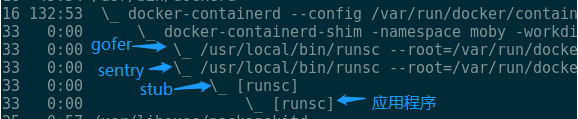
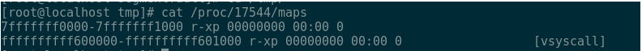

原文: https://blog.csdn.net/M2l0ZgSsVc7r69eFdTj/article/details/82754587
传统的Container由于隔离性差而不适合作为Sandbox运行不受信工作负载，VM可以提供很好隔离但却额外消耗较多的内存。Google开源的gVisor为我们提供另外一种选择：在牺牲掉一定性能的情况下，它只额外消耗非常少量的内存，却可以提供了类似等级的隔离性。在本文里我们深入gVisor，最后了解一下我们增强gVisor以支持资源控制的方案。
1.1. gVisor是什么
gVisor为在Container中运行不受信代码提供了新的解决思路，gVisor是一个Sandbox方案和实现。 gVisor尝试解决什么问题 虽然Container上可以通过Namespace和Cgroup做资源的限制，但Container里的应用程序依然可以访问很多系统资源。事实上跟没有跑在Container里的应用程序一样，Container里的应用程序可以直接通过Linux内核的系统调用陷入到内核。任何一个被允许（通过Seccomp过滤系统调用）的系统调用的缺陷都可以被恶意的应用程序利用。 主流的Sandbox基于VM虚拟机的方案，将潜在恶意的应用程序隔离在独立的虚拟机中，例如Kata Linux，该项目与Docker和Kubernetes都有集成。基于VM的方案提高了很好的隔离，但相应额外消耗的内存会多一些。在有需要运行大量Container的场景下的额外资源消耗不能被忽略。 gVisor提供了另外一种Sandbox思路，gVisor非常轻量级，额外的内存消耗非常小，但同时提供了和VM方案相当隔离等级。该分享里介绍的基于Ptrace的gVisor，系统调用的性能比较差，应用程序的兼容性也差一些。gVisor可以和Docker很好的集成，但和Kubernetes的集成还处于实验阶段。在和Docker集成的时候，gVisor遵循了OCI（Open Containers Initiative）标准，所以可以作为Docker的一个Runtime执行。
1.2. gVisor如何工作
以非特权用户运行的gVisor通过截获应用程序的系统调用，将应用程序和内核之间完全隔离。gVisor没有简单的把应用程序发出的系统调用直接作用到内核，而是实现了大多数的系统调用，通过对系统调用模拟，让应用程序间接的访问到系统资源。gVisor模拟系统调用本身时对操作系统执行系统调用，通过使用Seccomp对这些系统调用做过滤。那么gVisor是如何截获应用程序的系统调用的呢？
1.2.1. gVisor截获系统调用
gVisor存在两种运行模式，这次分享只介绍了基于Ptrace的gVisor。 为了理解gVisor如何拦截系统调用，需要先了解一下Ptrace：Ptrace是Linux提供的一个系统调用接口，通过Ptrace，可以在两个进程之间建立Tracer和Tracee之间的关系。Tracer可以控制Tracee，例如当Tracee收到信号的时候主动进入stopped状态，此时Tracer可以选择是否对Tracee做一些操作（比如设置Tracee的寄存器上下文或者内存中内容等），在操作执行后，Tracer可以选择是否让Tracee继续执行。 Tracee除了可以在接受到信号时候进入stopped状态外，也可以被Tracer告知在即将进入系统调用时或者即将离开系统调用时进入stopped状态。具体说Ptrace可以通过PTRACE_SYSEMU控制Tracee在即将进去系统调动时stop。gVisor也正是通过该命令来截获应用程序的系统调用。 Sentry是通过Ptrace来控制应用程序，那么应用程序是如何变为Tracee的呢？
1.2.2. 将应用程序变成Tracee的
下图是gVisor控制应用程序的进程关系：

当gVisor以Docker的Runtime启动的时候，可以看到类似的进程间关系：docker-containerd-shim是容器的启动器；sentry是gVisor用于截获系统调用模拟内核的程序，他也正是Tracer。Stub可以暂时不用理会，stub的子进程正是我们想要放到Sandbox里的应用程序。Sentry创建stub，随后stub创建应用程序进程，sentry通过Ptrace attach到了stub和应用程序上。当应用程序在将要执行系统调用的时候会主动stop，此时也正是sentry拦截和模拟系统调用的点。 这跟用gdb调试程序C/C++程序类似，通过命令行给gdb指定一个要调试的目标程序的时候，该程序会以子进程的方式运行，gdb作为Tracer attach到应用程序上来对应用程序进行控制。类似gdb，sentry也以类似的方式启动应用程序，只是sentry先启动了一个stub，然后让stub以它的子进程方式启动了应用程序。 应用程序被创建并变为Tracee后，接下来就是sentry如何完成应用程序的启动流程了。
1.2.3. 启动应用程序
应用程序被初始attach到sentry后，sentry负责启动应用程序。
在操作系统启动应程序场景里，应用程序的二进制文件由操作系统加载，譬如分配虚拟内存空间用来存放二进制中的代码段、数据段、共享库或者初始化应用程序的栈空间。gVisor启动应用程序的场景下，类似的过程由sentry完成：
为了了解sentry是如何初始化应用程序的虚拟内存空间，需要先了解一下上文提到的stub进程。
Stub进程的一个重要的作用是作为应用程序的初始模板，以该模板创建应用程序。事实上stub作为sentry的子进程，在启动后会主动将虚拟内存地址空间里几乎所有的memory region（通过查看/proc/${pid}/maps查看一个进程虚拟内存地址空间里的所有memory region）甚至将代码段和数据段也unmmap掉了。只保留两个memory region：

其中第一个region存放了最简化的代码，即上图中第一个段，执行该代码甚至不需要栈空间，所以连栈段也被unmap掉了。
这样的空洞的虚拟内容地址空间正好可以作为一个模板虚拟内存地址空间。当stub以子进程的方式启动应用程序后，应用程序的虚拟内存地址空间的layout与stub的一样。应用程序在创建出来后会立即被sentry attach，此时正是sentry做应用程序初始化的过程：sentry初始设置应用程序的RIP（指令执行寄存器）的初始值为应用程序二进制中读出来的应用程序入口地址，该地址一般位于应用程序虚拟地址空间的较低位置，并通过PTRACE_SYSEMU指示应用程序开始执行，直到遇到以下两种事件的时候进入stop状态：
- 将要执行一个系统调用
- 收到了来自内核或者进程发给它的信号
因为应用程序的初始执行位置在用户态的虚拟内存地址里没有对应的memory region，所以应用程序会收到来自内核发来的SIGSEGV信号（段错误）。这里的场景非常类似通常的page fault，当一个应用程序试图访问的地址位于某个虚拟内存地址段内，但该段没有对应物理内存页的时候，操作系统会因此陷入page fault，在page fault的handler中为该虚拟内存地址段映射物理页。 事实上，在sentry在启动应用程序运行环境之前，已经应用程序“分配”了一个虚拟内存地址段（这个分配并不是使用mmap或者brk真正的在应用程序的虚拟地址空间中分配地址段，该分配是一个提前占位）。上面说到当应用程序执行指令地址上因为没有实际分配虚拟内存地址段，所以收到来自内核的SIGSEGV，并且进入stopped状态，此时sentry会通过mmap在该地址上真实分配一个虚拟地址内存段（类比操作系统为虚拟内存地址段上分配物理页），并且因为mmap的源文件是二进制文件本身，所以当sentry在处理完SIGSEGV指示应用程序继续执行的后，应用程序将实际执行到该二进制中的代码。 至此应用程序就已经启动起来了。接下来需要了解就是sentry如何控制应用程序的执行了。
1.2.4. 应用程序的执行
应用程序被启动起来后，在执行的过程中可能会陆续遇到新的SIGSEGV（譬如程序读写地址段，或者栈空间的扩展），或者执行系统调用。 在“应用程序如何被启动”里实际上已经描述了SIGSEGV信号处理的一种场景，即只读地址且有映射文件的场景，其他的场景譬如匿名地址段或者栈空间的区别在于该地址段没有mmap实际的文件，而是mmap了一个sentry提前准备好的“空白”文件中。 在“gVisor如何拦截系统调用”中描述了系统调用的拦截，当应用程序在进入系统调用之前会自动进入stopped状态，此时sentry读取应用程序的系统调用号以及系统调用入参，试图模拟该系统调用。以文件的读sys_read为例，sys_read的作用是找到指定的文件，打开并读取文件内容，并将内存写入到应用程序系统调用参数指定的虚拟内存地址上。Sentry在接到这个的系统调用时，会将文件读取请求通过9p协议发给之前提到的gofer进程（sentry和gofer之间有建立socket pair传输9p协议），由gofer进程执行真正的文件读取且将读到的内容通过9p协议返回给sentry。sentry把读取到的文件内容写入到应用程序的虚拟内存中（如果该地址没有对应的虚拟内存地址段，则分配后再复制），随后sentry将系统调用的实际模拟结果写入到应用程序的寄存器中，然后让应用程序继续执行。恢复执行后的应用程序因为得到了系统调用的结果，所以在应用程序在分不清实际上系统调用是直接由操作系统执行了还是由sentry做的模拟的情况下，系统调用得到了满足。
1.2.5. 应用程序的访问控制
“应用程序的执行”中对于文件读系统调用处理的描述实际上也描述了对应用程序文件系统访问的控制，实际上在“应用程序启动”中为了省略的根文件系统挂载的描述，在根文件系统挂载的模拟中也涉及到了通过9p协议对文件系统的访问。文件写的处理也非常类似。 除了文件读写外，还有很多其他的系统调用，譬如共享内存或其他IPC，锁，创建线程或者进程，发送信号，socket，execv，epoll，eventfd，pid namespace等，gVisor都进行了模拟，涉及到了操作系统的方方面面。这里仅仅介绍了socket相关的系统调用： Sentry在用户态实现了基本的TCP/IP协议栈，在启动应用程序之前，gVisor会启动一个临时的start进程，在start进程会进入到docker创建的network namespace，start进程从该network namespace中获取veth pair中属于gVisor的一端的veth设备，创建AF_PACKET的socket绑定到该veth设备上来接管该设备上的网络流量（同时也将ip从该设备上去掉了），并将该socket传递给sentry进程。后续当sentry截获了应用程序的socket系统调用后，最终通过该socket将网络包实际从veth设备上发送出去；从该veth设备上接收到的网络包在经过sentry网络协议栈后递交给应用程序的socket层。
1.3. gVisor当前缺少资源限制
gVisor具备沙盒的能力，但是缺少Cgroup提供的资源使用量的限制的功能。在官方的Roadmap中计划提供Cgroup支持。但此时为了能够使用gVisor运行工作负载，需要让gVisor具备资源使用量限制的功能。 Docker通过Runtime支持资源使用量限制，gVisor则是Docker的另外一个Runtime名叫runsc。通过了解Docker原生的Runtime即runC，可以为gVisor中支持Cgroup提供思路。Docker通过OCI（Open Containers Initiative）spec跟Runtime之间进行交互，符合该标准的Runtime可以通过Docker的命令来启动。OCI spec里规范了应用程序启动资源使用量的限制的描述，Docker在启动Runtime的时候，将OCI spec内容传递给Runtime，由Runtime负责给应用程序应用这些资源限制： runC由docker shim启动，首先会创建一个init进程，该进程最终会通过execv转变为我们希望启动的应用程序，在init进程执行execv之前，runC会为init进程创建Cgroup，将实际上init进程放入到该Cgroup中。此后init进程通过execv变为应用程序，应用程序以及后来由它创建的子进程也都会进入到该Cgroup中，从而达到资源限制的功能。 gVisor的启动流程中类似也可以嵌入类似的逻辑：runsc启动流程中首先会创建gofer和boot进程，在boot进程真正启动应用程序之前，runsc为boot进程创建新的Cgroup，并将boot进程放入到该Cgroup中，后续boot进程以及被它Ptrace的应用程序就都会处于该Cgroup中，从而达到资源限制的效果。
版权声明：本文为CSDN博主「Docker_」的原创文章，遵循CC 4.0 BY-SA版权协议，转载请附上原文出处链接及本声明。 原文链接：https://blog.csdn.net/M2l0ZgSsVc7r69eFdTj/article/details/82754587